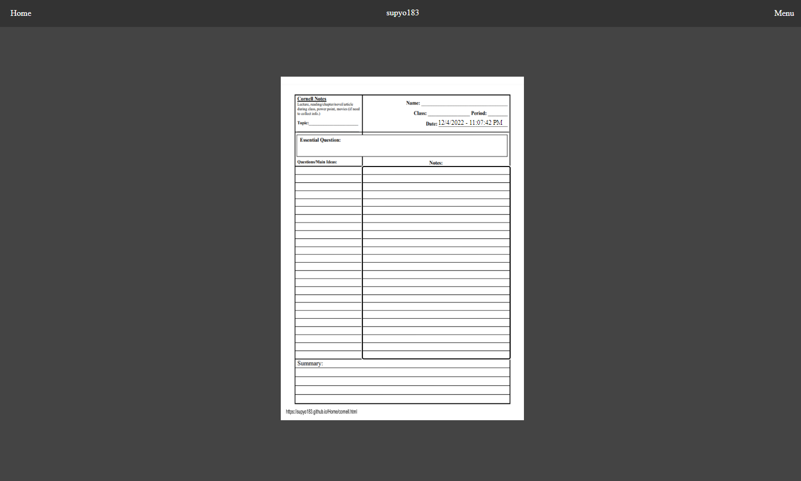

I only created this to have all of my things in one spot. Since it will have all of my things, it may eventually get some strange things that probably shouldn't be added. Also, once when my other project gets changes to improve it, I will stop working on both this page and that project as I will begin learning python and won't be doing web development for a while.
I only have one thing that is considered a WIP and also tests what I am capable of doing. The link of it is under the name of Cornell-editor
and is currently the only thing that is linked. The only reason for this is because everything else can be found in a online code editor.
The thing about me only having only 1 thing in WIP is a lie, but why? Well, the reason is because this page is technically a WIP since it is also experimental. This page also was going to have a bit of a different look with a parallax effect...Yeah it should be obvious to what happened to it.
What is seen here is the current look of the page that I will change soon. Why am I showing this when you can access it yourself? Well, it's for the lazy people who can't even change the page.
This is a screenshot, please don't think it will do something if you click on it

Jokes on you, I'm only doing this to fill up the page. If you were smart enough to select this area, congrats. Anyway, I'm only a front-end web developer who dreams to enter the game developement field......that's it.